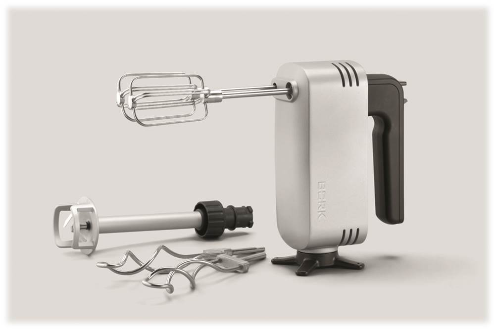
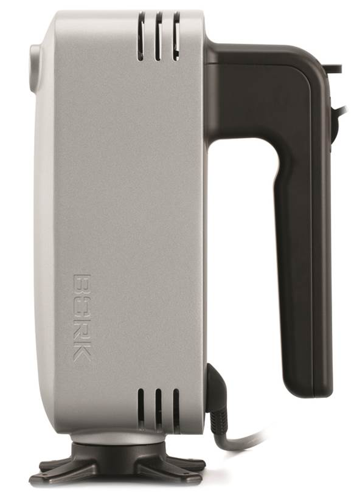
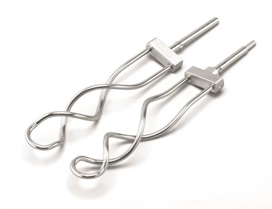
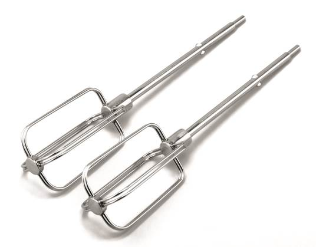
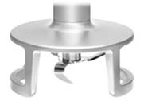
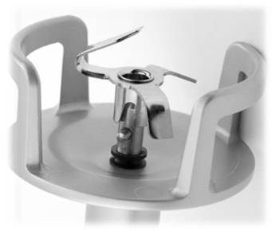
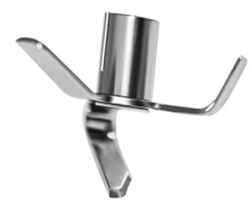
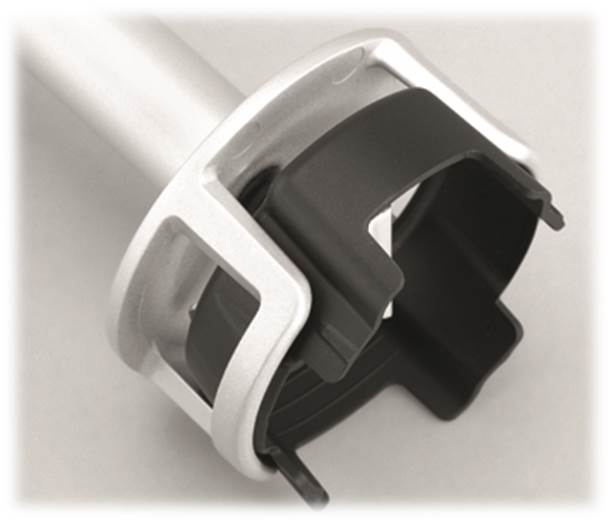
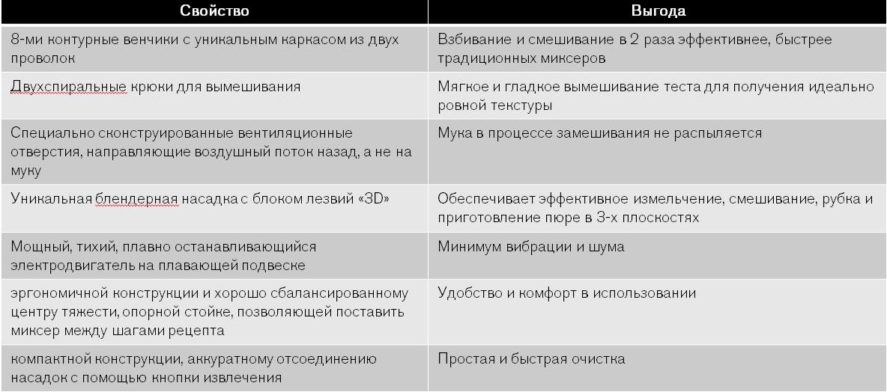

Ручной миксер BORK B782
Функционал трёх приборов в одном
Миксер BORK - объединяет в одном устройстве функции миксера, блендера и тестомеса. Благодаря этому можно замешивать, измельчать, взбивать и готовить пюре одним прибором.
Незаменимый кухонный прибор, который способен выполнить все, что от него требуется, и при этом сэкономит место на кухне.
Ключевые особенности
- Комфортное использование
- Уникальные насадки миксера
- Уникальные насадки блендера
- Быстрое и эффективное смешивание в любой посуде
- Запатентованный 3D нож
- Запатентованная насадка от разбрызгивания
- Швейцарская сборка
Комфортное использование
- Продуманная конструкция корпуса и плавающая подвеска для двигателя сводит вибрацию к минимуму.
- Устойчивая крестообразная опорная стойка позволяет удобно ставить миксер между этапами приготовления, а так же выступает в роли смотки для провода питания.
- Специально сконструированные вентиляционные отверстия направляют воздушный поток назад, предотвращая распыления муки в процессе замешивания.
Комфортное использование
- Миксер имеет сбалансированный центр тяжести, устройство для смотки сетевого шнура, эргономичную ручку, удобную как для правшей, так и для левшей.
- Высокоэффективный DC - двигатель 250 Вт с высочайшим КПД – последняя разработка швейцарских инженеров.
- Безупречный результат смешивания ингредиентов - результат оптимально сбалансированной скорости вращения и крутящего момента.
Уникальные насадки миксера
 - Запатентованные насадки-тестомесы разработаны специально для замешивания плотного теста и изготовлены из высокопрочной стали, которая не гнётся даже при больших нагрузках. Двух спиральные крюки обеспечивают мягкое и гладкое вымешивание теста для получения идеально ровной текстуры.
- Запатентованные 8-контурные венчики более эффективно насыщают ингредиенты воздухом, нежели традиционные. Взбивание и смешивание в 2 раза быстрее традиционных миксеров.
Уникальные насадки блендера
 - Запатентованная конструкция защитного конуса блендера имеет открытую конфигурацию, что увеличивает циркуляцию перерабатываемых ингредиентов. Вы можете только держать блендер в емкости, нет необходимости постоянно его перемещать вверх и вниз. При этом блендер не присасывается к дну.
- Небольшой купол внутри насадки блендера минимизирует разбрызгивание.
- Защитный конус с предохранительными пластинами полностью исключает контакт вращающегося ножа с дном и стенками емкости. Поэтому можно применять емкости с антипригарным покрытием.
Уникальные насадки блендера
 
Уникальный нож с тремя лопастями «3D», обеспечивает эффективное измельчение и смешивание в посуде любого объёма и формы.
Насадка от разбрызгивания предназначена для работы с маленькими порциями и смешивания в неглубоких емкостях. Идеально подходит для приготовления детского питания.
Технические харктеристики
Мощность 250 Вт
Количество оборотов:
Для блендерной насадки – 25 000 об/мин
Для венчиков и насадок-тестомесов 700-1250 об/мин
Габариты (В~Ш~Г): 13~7,5~19 см
Вес: 1,5 кг
Сделано в Швейцарии